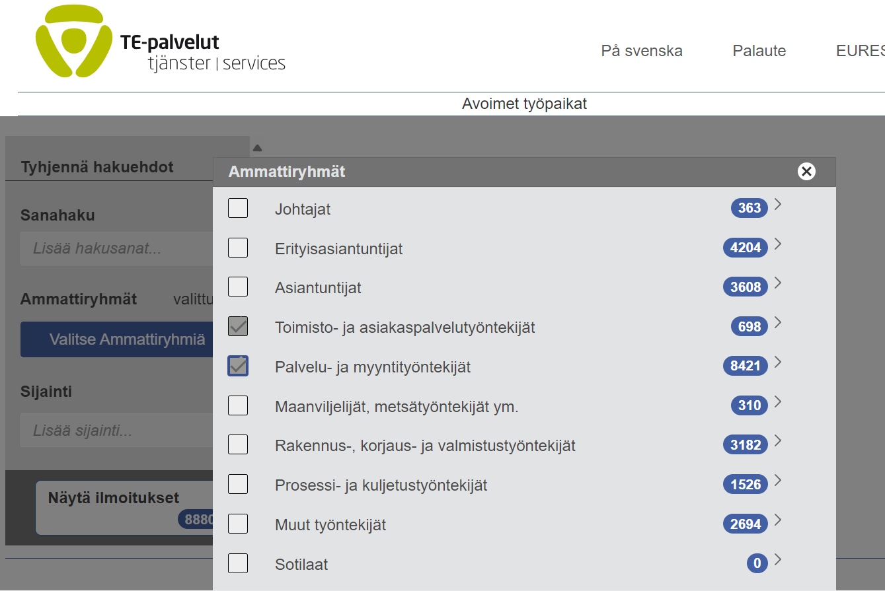

TYÖELÄMÄSSÄ TOIMIMINEN, 2 osp (2026)
YTO3-TYTO-P-2026
2.2 Työsopimus prosessina
Kuvaus
Tämä tehtävä koostuu viidestä (5) eri tehtävästä kohti työsopimusta. Tee tehtävät järjestyksessä A:sta E:hen.
Palauta tehtävät annetun ohjeen mukaan. Tehtäväkokonaisuus arvioidaan numeerisesti arvosanalla 0-5.
A. Tutustu työnhakusivustoihin
Tehtävässä tutustut miten avoinna olevia työpaikkoja voi löytää ja hakea.Tutustu työpaikkoja tarjoaviin verkkosivustoihin siten, että yksi on työnhakusivusto (esim. TE-palvelut), yksi henkilöstöpalvelusivusto (esim. Barona) ja yksi kunnan/valtion sivusto (esim. Vantaan kaupunki).
TEHTÄVÄ A
Etsi näiden sivuilta yksi työpaikka, johon etsitään asiakaspalvelun ammattilaista. Valitse itseäsi kiinnostava työ-/työpaikka, joka sopii sinun nykyiseen koulutukseen (valitsemasi Osaajapolku -ammatti) Mercuriassa.
Kirjoita vastaukset Verkkotekstiin kokonaisina lauseina siten, että lukija tietää mihin olet vastannut. Mitä tarkemmin kirjoitat vastaukset, sitä paremmin niistä on hyötyä myös sinulle tehtäväkohdissa B-E.
2. Milloin työ alkaa? Onko päättymisaikaa?
3. Onko työ osa-aikainen / kokoaikainen vai jotain muuta? Mitä voit kertoa työajoista tai työtunneista?
4. Mitä työtehtäviä tulee tehdä?
5. Mitä osaamista työntekijältä vaaditaan?
6. Milloin haku päättyy ja miten työtehtävää haetaan?
7. Ota työpaikkatiedot talteen! Varmista, että sinulla on tämä valitsemasi työpaikkatieto olemassa myös tehtävien B-E:n tekemisessä. Pelkkä linkin kopiointi ei välttämättä riitä, vaan ota sivujen tiedoista kuvakaappaukset omaan OneDriveen.
B. Tee sähköinen työhakemus
Nuorella on usein vähän niin koulutusta kuin työelämäkokemusta, jolloin työhaun yhteydessä vapaa-ajan toiminnot ja harrastuneisuudet sekä työharjoittelut (TET /koulutussopimus) nousevat merkittävään asemaan. Nuoren on tunnistettava omat vahvuutensa suhteessa haettavaan työpaikkaan päästääkseen mukaan työhaun kovaan kilpailuun voittajana.
yhteydessä vapaa-ajan toiminnot ja harrastuneisuudet sekä työharjoittelut (TET /koulutussopimus) nousevat merkittävään asemaan. Nuoren on tunnistettava omat vahvuutensa suhteessa haettavaan työpaikkaan päästääkseen mukaan työhaun kovaan kilpailuun voittajana.
TEHTÄVÄ B
1. Olet A-kohdassa etsinyt sopivan työpaikan. Täytä oheinen sähköinen hakemus sen perusteella. HUOM! seuraavat kohdat:
- suuntautumisesi on Osaajapolku-valintasi (Myynti -Markkinointi-Taloushallinto-Yrittäjyys)
- muista laittaa koulutuksesi arvioitu päättymisen ajankohta (esim. 5/2026)
- työkokemukseen kaikki TET ja TJK-jaksot + missä työpaikassa ja mikä oli pääasiallinen tehtävä/näyttö + mahdollinen palkkatyö (kesätyö, osa-aikatyö)
- huomioi, että laitat harrastuksesi ja sen kesto (mitä tahansa harrastat) ehdottomasti hakemukseen
2. "Luo asiakirja", kun olet tehnyt hakemuksesi (päätössivu) valmiiksi -> tallenna word -tiedosto OneDriveen TYTO-kansioosi PDF-muotoon, nimeä dokumentti Työhakemus_Oma nimesi -> palauta tiedosto PDF-muodossa arvioitavaksi.
Olet päässyt työnhaussa eteen päin. Työnantaja haluaa tutustua sinuun lisää videohakemuksen kautta.
TEHTÄVÄ C
Tee valitsemaasi työpaikkaan (tehtävä A) videoesittely. Sinun tulee näkyä ja kuulua videossa. Videon minimipituus on 1 minuutti ja suositeltava pituus on maksimissaan 2 minuuttia.
Perehdy videohakemuksen tekemiseen oheisen tekstin avulla, Ohjeita videohakemuksen tekemiseen ja katsomalla Työhaastattelu (video) -ohjeistuksia.
1. Tee ensin käsikirjoitus vastaamalla seuraaviin kysymyksiin:
* Kerro itsestäsi lyhyesti ja ytimekkäästi
* Kerro millainen olet "työntekijänä" (mm. tuo esille mitä positiivista sinusta on kerrottu esim. harrastuksissa, vanhemmat, opettajat...)
* Kerro miksi haet juuri tätä paikkaa (mm. mistä saat energiaa ja minkä tyyppisistä tehtävistä pidät... yhteneväisyydet hakemaasi työpaikkaan)
* Kerro vahvuutesi (missä olet hyvä ja ovat oleellisia juuri tässä työpaikassa, jota haet) ja kerro myös mitä sinä haluat oppia nimenomaan tämän työpaikan näkökulmasta
* Mitä odotat tältä työltä (muu kuin palkka) ja mitä sinulla on annettavaa tälle työpaikalle (mitä tietoa/taitoa voisit tuoda tähän työhön)
* Vaatiiko työpaikka vieraskielen osaamista? Tee esittelyyn 1-2 lauseen englannin/vieraalla kielellä, joka voi olla myös sama kuin seuraavan kohdan "ytimekäs lopetus"
* Kirjoita lopuksi ytimekäs lopetus, jossa kehotat työnantajaa ottamaan sinuun yhteyttä.
2. Harjoittele puhetta muutaman kerran. Voit tehdä muistiinpanoja asioista esim. post-it lapulle, mutta älä lue puhetta suoraan tästä.
3. Harjoittele videoimalla puhe esimerkiksi omalla kännykälläsi. Videon pituus minimissään 1 minuutti.
4. Kuvaa video eKampuksen Tehtävän palautus -toiminnolla. Lisää palautus (salli ääni ja kuva)-> Videoi -> Tallenna
D. Työhaastattelu
Onneksi olkoon! Olet päässyt jatkoon työhakemusprosessissa. Työnantaja (työpaikka tehtävässä A) on kutsunut sinut työhaastatteluun. Valmistaudu tähän haastatteluun seuraavan tehtävän avulla:
Tee (word tai PP) Mind Map / Huoneentaulu vastaamalla seuraaviin kysymyksiin:
1. Miksi haet tätä työpaikkaa? - tässä työnantaja haluaa tietää miten hyvin olet tutustunut työnantajaan. Kerää tietoa työpaikasta sen nettisivuilta ja tuo esille se, miten sinun kokemuksesi sopii työtehtävään
2. Mitkä ovat vahvuutesi? - listaa taitojasi hakemaasi työpaikkaan
3. Mikä on suurin heikkoutesi? -valitse heikkous, jota pystyt kehittämään hakemassasi työpaikassa
4. Missä näet itsesi 5 tai 10 vuoden kuluttua? - keskity vastaamaan mitä haluat oppia ja missä asioissa haluat kehittyä juuri tässä yrityksessä
5. Miten reagoit konflikteihin (ensiaputilanne / uhkaava asiakas / rikkoutunut tuote / reklamaatio)? - kuvaile jokin konflikti ja miten ratkaisisit sen
6. Miksi yrityksen tulisi palkata sinut? - kerro mitä hyötyä yritykselle on sinun palkkaamisestasi
7. Tallenna MindMap PDF muodosssa ja palauta
TEHTÄVÄ E
1. Avaa Työsopimuspohja ja täytä siinä olevat kentät omien tietojesi sekä työntantajan tietojen (A-tehtävästä) osalta. Jos työnhakusivustolla ei ole esimerkiksi palkkatietoja, voit kysyä tähän ohjeistusta opettajaltasi tai katso TES palkkataulukosta aloituspalkka.
2. Paina "Tulosta" ja muuta paperinkokoa skaalaamalla tiedosto kokoon 70, saat tiedoston yhtenä dokumenttina näkyviin. Ota kuvakaappaus tästä valmiista työsopimuksesta ja palauta kuva-tiedostoina.
TEHTÄVIEN PALAUTUKSET
A: kirjoita vastaukset Verkkotekstiin lauseina
B: ota tehtävästä PDF ja palauta tämä liitetiedostona. Nimeä tiedosto "Sähköinen työhakemus_oma nimesi"
C: videoi esittely eKampuksen Lisää palautus -> Videoi -> Tallenna
D: tuo valmis Mind Map/Huoneen taulu PDF-muodossa-> Liitä palautukseen. Nimeä tiedosto "Työhaastattelu_oma nimesi"
E: ota täytetystä sopimuksesta kuvakaappaus ja liitä palautukseen. Nimeä kuvat "Työsopimus_yläosa_oma nimesi" ja "Työsopimus_alaosa_oma nimesi"
TEHTÄVÄN ARVIOINTI
Tehtävä arvioidaan kokonaisuutena arvosanalla 0-5.